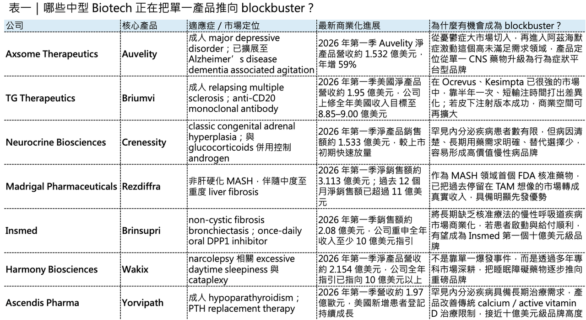
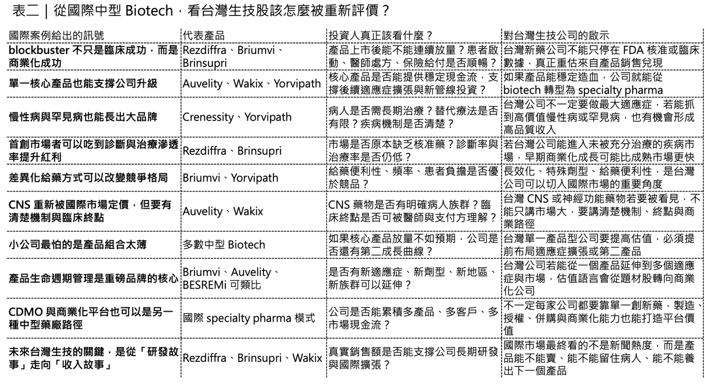

在很長一段時間裡，製藥業的 blockbuster drug，似乎是大型藥廠的專屬勳章。
分享這篇分析
把這篇文章轉給關注生技醫藥、公司研究或資本市場的朋友。
年銷售額突破 10 億美元，代表的不只是產品好賣，而是公司必須同時具備臨床開發能力、法規溝通能力、保險給付能力、醫師教育能力、銷售組織能力，以及後續適應症擴張能力。

這些資源過去多半掌握在大型跨國藥廠手中。中小型 Biotech 比較常扮演的角色，是「創新源頭」或「被收購對象」。它們做出漂亮的 Phase 2 數據，然後授權給大藥廠；或者在 Phase 3 前後被併購，讓大型藥廠接手後續全球開發與商業化。
但這個格局正在改變。
2026 年第一季財報顯示，一批中型商業化 Biotech 已經不再只是靠臨床數據、監管節點或併購預期支撐估值，而是開始用真實銷售額、患者啟動、處方成長、適應症擴張與全年營收指引，證明自己有能力孵化出真正的 blockbuster brand。
這是一個很重要的轉折，因為當一家 Biotech 擁有年銷售額 10 億美元級別的核心產品，它就不再只是研發公司。它開始具備自我造血能力，它可以養銷售隊伍，可以投入下一代管線，可以做生命週期管理，也可以在資本市場上取得完全不同的估值語言，換句話說，blockbuster drug 對中型 Biotech 的意義，不只是「一個產品賣得很好」，而是公司階段的升級。

01｜ 中型 Biotech 的觀察重點，正在從臨床節點轉向商業兌現
過去幾年，市場看中小型 Biotech，最常看的幾個點是：臨床試驗是否成功、FDA 是否受理、PDUFA 日期在哪一天、有沒有 breakthrough therapy designation、有沒有大型藥廠合作，或者有沒有被收購可能，這些仍然重要。
但對已經完成商業化的 Biotech 來說，市場現在看的東西更直接：
💊 季度銷售額是否持續成長？
💊 新患者啟動是否穩定？
💊 醫師處方是否擴大？
💊 保險給付是否順暢？
💊 適應症擴張是否能帶來第二成長曲線？
💊 銷售隊伍擴編後，是否真的轉化成收入？
這就是商業化 Biotech 和純研發 Biotech 的差別。
📈純研發 Biotech 的價值來自「可能性」。
📈商業化 Biotech 的價值來自「兌現能力」。
現在最值得關注的，是一批公司已經站在這個交界點上：它們沒有大型藥廠那麼龐大的產品組合，但已經有一個足夠清楚、足夠成長、足夠支撐公司策略的核心產品。這些產品若持續放量，就有機會把公司從「單品商業化」推向「中型製藥公司」。

02｜🧠 Axsome：Auvelity 從憂鬱症，走向 Alzheimer’s agitation 的大市場
Axsome Therapeutics 是這一波中型 Biotech 轉型裡，最值得注意的 CNS 公司之一。它的核心產品 Auvelity（dextromethorphan hydrobromide / bupropion hydrochloride），原本已經用於成人 major depressive disorder（MDD，重度憂鬱症）。2026 年第一季，Axsome 總淨產品營收達 1.912 億美元，年增 57%；其中 Auvelity 淨產品營收為 1.532 億美元，年增 59%，已經成為公司收入的主體，真正讓 Auvelity 估值天花板被重新打開的，是新適應症。
2026 年 4 月 30 日，FDA 核准 Auvelity 用於成人 Alzheimer’s disease dementia associated agitation，也就是阿茲海默症失智症相關激動。FDA 也明確指出，Auvelity 是第一個獲准用於此適應症的非抗精神病藥物。
Alzheimer’s agitation 不只是患者情緒不好，也不是一般照護上的「不配合」。它可能包含坐立不安、焦躁、言語攻擊、肢體攻擊、情緒痛苦與照護困難。這類症狀會大幅增加家庭與長照機構的照護壓力，也常常是患者進入機構照護的重要原因之一。過去臨床上常使用 antipsychotics 來控制這些行為症狀，但這類藥物在高齡失智患者身上有安全性疑慮，包括死亡風險與運動副作用等警示。Auvelity 能以非抗精神病藥物身分進入這個市場，商業意義不小。Axsome 也因此把 Auvelity 的 peak annual sales 預期提高到至少 80 億美元，且公司預期 MDD 與 Alzheimer’s agitation 兩個適應症大致各自貢獻一半。
這裡值得注意的不是公司喊了多大的數字，而是 Auvelity 的產品定位已經改變，它不再只是憂鬱症藥物，它開始變成一個 CNS 行為症狀平台型品牌：一邊有 MDD 的龐大患者基礎，一邊有 Alzheimer’s agitation 的高未滿足需求與差異化標籤。如果 Axsome 能把醫師教育、給付覆蓋、老年患者安全性與長照場景滲透做好，Auvelity 有機會成為少數由中型 Biotech 自主推上重磅高度的 CNS 品牌。
03｜🧬 TG Therapeutics：Briumvi 在多發性硬化成熟市場中撕開缺口
TG Therapeutics 的 Briumvi（ublituximab-xiiy），則展示了另一種中型 Biotech 成功路徑：不是開創全新市場，而是在成熟高競爭市場裡，靠差異化執行切出一塊位置。
2026 年第一季，TG Therapeutics 全球總營收約 2.05 億美元，其中 Briumvi 美國淨營收約 1.95 億美元。公司也把 2026 年全年全球總營收目標提高到約 9.25 億美元，並將全年美國 Briumvi 淨產品收入目標上修至 8.85 億至 9.00 億美元，這個成績不容易。因為 Briumvi 進入的是 relapsing multiple sclerosis（復發型多發性硬化症）市場，而這個市場早已有強勢產品。Roche 的 Ocrevus（ocrelizumab）和 Novartis 的 Kesimpta（ofatumumab）都已經建立相當強的醫師認知與患者基礎，在這種市場中，後進者如果沒有差異化，通常很難快速放量。
Briumvi 的定位是 anti-CD20 monoclonal antibody，用於成人復發型多發性硬化症，包括 clinically isolated syndrome、relapsing-remitting disease，以及 active secondary progressive disease。它的商業賣點之一，是給藥便利性。起始治療後，Briumvi 維持治療為每 24 週一次靜脈輸注；第三次及之後輸注時間約 1 小時。對需要長期治療的 multiple sclerosis 患者而言，半年一次、且輸注時間較短，是一個具體可感的便利性差異。更重要的是，TG Therapeutics 還在推動 Briumvi 的後續生命週期管理。公司已完成 subcutaneous Briumvi 隨機 Phase 3 關鍵試驗入組，也完成 IV Day 1 / Day 15 合併方案的 Phase 3 關鍵試驗入組。公司預計 2026 年中公布 ENHANCE 研究 topline data，並於 2026 年底至 2027 年第一季公布皮下注射 Briumvi Phase 3 topline data。
這裡的投資重點是：Briumvi 不只是一個上市產品，而是一個正在做劑型與給藥方案優化的品牌。如果皮下注射版本成功，Briumvi 的競爭場景就不再只是 infusion center，而可能進一步接近更方便、更靈活的治療模式。這正是中型 Biotech 要做大的關鍵：上市只是第一步，後面還要靠產品生命週期管理把市場打深。
04｜🧪 Neurocrine：Crenessity 讓罕見內分泌疾病也能長出 blockbuster 潛力
Neurocrine Biosciences 的 Crenessity（crinecerfont），是罕見疾病商業化放量非常值得看的案例。
Crenessity 在 2024 年底獲 FDA 核准，用於 4 歲以上兒童與成人 classic congenital adrenal hyperplasia（classic CAH，經典型先天性腎上腺皮質增生症），並與 glucocorticoids 併用，以控制 androgen 水平。2026 年第一季，Crenessity 淨產品銷售額達 1.533 億美元，而 2025 年同期僅 1,450 萬美元。以單季年化來看，Crenessity 已經超過 6 億美元年銷售額水準；公司也指出，第一季已配藥處方約 80% 獲得給付。
Classic CAH 是一種罕見遺傳性內分泌疾病，患者因酵素缺陷導致 cortisol 合成不足，同時出現 adrenal androgen 過度生成。長期以來，治療主要依靠 glucocorticoids，但臨床上一直存在兩難：劑量太低，androgen 控制不好；劑量太高，又會帶來長期 glucocorticoid 過量相關風險。
Crenessity 的價值，正是切入這個長期痛點。
它透過降低 ACTH 驅動的 adrenal androgen 生成，幫助患者在控制 androgen 的同時，減少對高劑量 glucocorticoids 的依賴。這是一個很典型的罕見病商業化邏輯：患者人數不一定巨大，但病因清楚、需求明確、治療週期長、替代選項有限。
對 Neurocrine 來說，Crenessity 的意義不只是增加一個新產品，而是讓公司從原本以 Ingrezza 為核心的神經科商業化公司，進一步擴展到罕見內分泌疾病市場。如果 Crenessity 後續新增患者維持穩定、給付流程更順、醫師覆蓋率繼續提升，它確實有機會成為罕見內分泌領域的十億美元級品牌。
05｜🫀 Madrigal：Rezdiffra 把 MASH 從概念市場推進真實收入
Madrigal Pharmaceuticals 的 Rezdiffra（resmetirom），是這一波中型 Biotech 中最具代表性的 blockbuster 案例之一。
MASH，也就是 metabolic dysfunction-associated steatohepatitis，過去長期被視為一個龐大但極難開發的市場。患者基數大、疾病進展慢、診斷與篩檢不容易、臨床終點複雜，而且過去許多公司在這個領域失敗。Rezdiffra 的意義在於，它是 MASH 領域第一個獲 FDA 核准的治療藥物。FDA 在 2024 年核准 Rezdiffra 用於伴隨中度至重度 liver fibrosis 的非肝硬化 MASH 成人患者，正式打開這個長期沒有核准療法的市場。
2026 年第一季，Rezdiffra 淨銷售額達 3.113 億美元，年增 127%。截至 2026 年 3 月底，用藥患者超過 42,250 人，約為 2025 年第一季的 2.5 倍。Madrigal 也指出，Rezdiffra 過去 12 個月淨銷售額已超過 11 億美元，正式跨過 blockbuster 門檻。 MASH 市場之前最大問題不是想像空間不足，而是市場是否真的能被啟動。醫師是否願意診斷？患者是否能被分層？保險是否願意給付？肝臟科、內分泌科、胃腸肝膽科之間的轉診路徑是否能建立？這些問題都會影響一個慢病市場能否真正商業化。
Rezdiffra 的快速放量，代表 MASH 市場不再只是紙上 TAM，它開始變成真實收入。對 Madrigal 來說，這是公司階段的巨大改變。它不再只是「第一個 MASH 藥物開發成功的公司」，而是開始變成擁有 blockbuster 產品、能用商業現金流支撐後續管線和市場擴張的中型製藥公司。更重要的是，MASH 市場目前滲透率仍低。診斷率、篩檢路徑、治療經驗與患者教育都還在早期。這意味著 Rezdiffra 的銷售不一定已經反映市場全貌。當然，競爭會來。GLP-1、FGF21、THR-β、siRNA 與其他代謝肝病療法都在路上。但 Rezdiffra 已經先把市場打開，這對 Madrigal 是非常重要的先發優勢。
06｜🫁 Insmed：Brinsupri 讓被忽略的慢性呼吸道疾病變成十億美元機會
Insmed 的 Brinsupri（brensocatib），則是慢性呼吸道疾病領域最值得關注的新產品之一。Brinsupri 是 once-daily oral DPP1 inhibitor，用於 non-cystic fibrosis bronchiectasis（NCFB，非囊性纖維化支氣管擴張症）。FDA 在 2025 年 8 月核准 Brinsupri，這也是第一個且當時唯一獲准用於 NCFB 的治療藥物。
2026 年第一季，Brinsupri 銷售額達約 2.079 億美元；Insmed 也重申 2026 年 Brinsupri 全年收入至少 10 億美元的指引。這個產品的意義在於，它把一個長期被低估、缺乏核准藥物的慢性呼吸道疾病，轉化成可見的商業市場。NCFB 患者常面臨反覆急性惡化、慢性咳嗽、痰液增加、感染、肺功能下降與生活品質惡化。過去治療多半依賴抗生素、支氣管擴張、排痰與支持療法，缺乏針對疾病發炎惡化機制的核准藥物。
Brinsupri 透過抑制 dipeptidyl peptidase 1（DPP1），影響 neutrophil serine proteases 活化，目標是降低中性球驅動的氣道發炎與急性惡化。這讓它在 NCFB 市場中具備明確差異化。不過，Insmed 的案例也提醒投資人：市場預期有時候比公司指引更激進。Brinsupri 第一季銷售額雖然達到 2.08 億美元附近，但部分買方預期更高，股價反而出現壓力。這說明 blockbuster launch 的市場定價非常殘酷：即使銷售成績已經很強，只要低於最樂觀預期，短期股價仍可能修正。所以 Brinsupri 的長期重點不是單季有沒有超出最高預期，而是能不能持續增加患者、穩定給付、降低急性惡化，並在美國以外市場打開第二階段成長。
🫁 如果 2026 年真的達成至少 10 億美元銷售，Insmed 就會從專科肺病公司，進一步站上中型商業化 biotech 的新高度。
07｜ Harmony：Wakix 用多年商業化執行，走向十億美元品牌
Harmony Biosciences 的 Wakix（pitolisant），是一個比較不一樣的案例。它不是靠突然獲得一個超大新適應症爆發，而是靠多年專科市場深耕，把 narcolepsy 藥物一步步推向 blockbuster 門檻。
Wakix 用於 narcolepsy 相關 excessive daytime sleepiness 與 cataplexy。2026 年第一季，Wakix 淨產品營收達 2.154 億美元，年增 17%；Harmony 也確認 2026 年全年淨營收將超過 10 億美元的指引。Wakix 的機制是 histamine H3 receptor antagonist / inverse agonist。它和傳統 stimulant 不同，也和 oxybate 類藥物不同，因此在 narcolepsy 治療中有自己的定位。並不是所有 blockbuster 都需要一開始就做超大疾病市場。有些產品是從相對專科、相對集中的市場出發，靠清楚定位、醫師教育、患者留存、保險覆蓋與適應症拓展，慢慢做成高品質現金流。
Wakix 對 Harmony 的價值，正是在這裡。它提供穩定收入，也讓 Harmony 能繼續布局 sleep-wake disorder、rare neurological diseases 與後續 pipeline。這是一家公司從單產品商業化公司，走向自我造血平台的關鍵過程。
08｜Ascendis：Yorvipath 證明罕見內分泌疾病也能接近重磅高度
Ascendis Pharma 的 Yorvipath（palopegteriparatide），是罕見內分泌疾病領域另一個正在接近 blockbuster 高度的產品。Yorvipath 用於成人 hypoparathyroidism（副甲狀腺功能低下症）。2026 年第一季，Yorvipath 營收達 1.97 億歐元；Ascendis 也指出，美國市場第一季新增患者登記超過 1,000 例。
🧫 Hypoparathyroidism 是一種需要長期管理的疾病。患者因 parathyroid hormone 不足，導致血鈣、血磷、腎臟併發症與生活品質問題。傳統治療多依賴 calcium 與 active vitamin D，但這種方式無法真正取代生理性的 PTH 作用，也可能帶來長期管理挑戰。Yorvipath 作為 PTH replacement therapy，提供的是更接近疾病機制的治療方式。FDA 在 2024 年核准 Yorvipath 用於成人 hypoparathyroidism，當時也被視為 Takeda Natpara 停止供應後，美國市場的重要治療選項。
🧫 Ascendis 的優勢不只是 Yorvipath 單一產品，而是 TransCon technology platform。這家公司長期把罕見內分泌疾病做成平台型策略，從 Skytrofa 到 Yorvipath，再到後續產品，重點都在於改善蛋白／胜肽類藥物的給藥便利性、藥物暴露曲線與長期治療體驗。Yorvipath 的放量，說明罕見內分泌疾病不一定只是小市場。只要治療需求長期存在、產品能改善標準療法痛點、給付與患者登記順利，這類產品仍然有機會接近十億美元級別。
09｜這些產品共同告訴我們：blockbuster 不只是臨床成功，而是商業系統成功
Auvelity、Briumvi、Crenessity、Rezdiffra、Brinsupri、Wakix、Yorvipath 分屬不同疾病領域。
💰有的是 CNS。
💰有的是 multiple sclerosis。
💰有的是罕見內分泌疾病。
💰有的是 MASH。
💰有的是慢性呼吸道疾病。
💰有的是睡眠障礙。
但它們共同指向一個變化：中型 Biotech 的成長邏輯，正在從研發節點驅動，轉向產品兌現驅動。一個產品能否跨越 10 億美元年銷售額，考驗的不只是藥效。還包括市場教育、保險給付、診斷路徑、醫師處方習慣、患者留存、銷售隊伍效率、適應症擴張、劑型改良、地理市場擴張，以及競爭者進場後的防守能力。
這也是很多中型 Biotech 最難跨越的地方，臨床成功是一種能力，商業化成功是另一種能力。
許多公司能做到前者，但做不好後者。真正稀缺的，是能從 discovery、clinical development、regulatory approval 一路走到 commercial execution 的公司。上述幾家公司正在證明：中型 Biotech 不一定只能把資產賣給大型藥廠，也可以自己把產品推成品牌，不過，這條路風險也更高。因為中型 Biotech 沒有大型藥廠那麼厚的產品組合，一旦核心產品放量不如預期、保險給付受阻、競品快速進場、標籤擴張失敗，整家公司估值都可能受到影響。所以市場給這類公司的估值，既會獎勵成長，也會懲罰失誤，這就是商業化 biotech 的殘酷現實。
10｜ 台灣生技股？
這裡對台灣投資人很有參考價值，因為台灣生技市場過去很常把重點放在「臨床數據」、「FDA 送件」、「授權想像」或「一次性里程碑」。但國際市場正在看的，是更後面的問題：
🔎產品能不能賣？
🔎能不能連續放量？
🔎能不能跨過 10 億美元？
🔎能不能靠單一核心品牌養出下一代管線？
🔎能不能從 Biotech 變成真正的 specialty pharma？
💊台灣最接近這條路徑的公司，是 藥華藥。
BESREMi（ropeginterferon alfa-2b-njft）已經不是單純研發故事，而是具備美國、歐洲與台灣商業化經驗的長期慢性病產品。接下來市場看的不只是 PV，而是 ET、pen device、真實世界資料、國際市場滲透率與長期生命週期管理。FDA 也已確認 BESREMi 在 essential thrombocythemia 的 sBLA PDUFA 目標日為 2026 年 8 月 30 日，這是藥華藥能否進一步擴大產品品牌高度的重要節點。
💊中裕則是另一個值得比較的案例。
Trogarzo（ibalizumab-uiyk）是台灣少數真正走過 FDA 藥證的創新生物藥，定位於 multidrug-resistant HIV-1，屬於臨床需求明確但患者族群較窄的高專科產品。中裕的經驗提醒我們：拿到 FDA 核准很重要，但若市場規模、商業化夥伴、適應症延展與後續產品線不足，公司仍然不容易自然長成 blockbuster 型企業。
【結語｜🚩 中型 Biotech 的下一階段，不是等大藥廠收購，而是自己養出重磅品牌】
Blockbuster drug 從來不只是銷售標籤，對中型 Biotech 來說，它代表的是公司命運的改變。
一個年銷售額 10 億美元級別的產品，可以讓公司從依賴資本市場融資，轉向依靠產品現金流；可以讓公司從單一臨床事件驅動，轉向商業化執行驅動；也可以讓公司從被動等待授權或收購，變成有能力主動配置下一輪研發與併購，Rezdiffra 已經跨越十億美元門檻。Auvelity、Briumvi、Brinsupri、Wakix、Yorvipath、Crenessity 也都沿著不同路徑接近或衝擊這個高度。它們的共同點不是都在同一個治療領域，而是都找到了一個清楚的臨床痛點，並且開始把這個痛點轉成真實商業收入，這就是中型 Biotech 最重要的升級。
💊從科學假說，到臨床證據。
💊從臨床證據，到法規核准。
💊從法規核准，到醫師處方。
💊從醫師處方，到十億美元級現金流。
能走完整條路的公司，才是真正能長大的 biotech，未來幾年，全球製藥市場不會只由大型藥廠定義。越來越多中型 Biotech 會靠單一核心品牌完成自我造血，再用這個現金流培養下一代管線。
對台灣生技產業來說，這也是最值得思考的地方，真正的價值，不只是做出一個新藥。而是把新藥做成品牌，把品牌做成現金流，把現金流做成下一個成長週期。
參考資料：
[0]: 各公司官網＆公開資料
[1]:
[2]:
FDA Approves First Non-Antipsychotic Drug to Treat Agitation Associated with Dementia | FDA
The U.S. Food and Drug Administration today approved an expanded use for Auvelity (dextromethorphan hydrobromide and bupropion hydrochloride) extended-release tablets to treat agitation associated with dementia due to Alzheimer’s disease in adults.
www.fda.gov
[3]:
Axsome increases Auvelity's peak sales projection to $8B
A few days after gaining an FDA expansion for Auvelity to treat Alzheimer’s disease agitation, Axsome has projected its peak sales to reach $8 billion
www.fiercepharma.com
[4]:
[5]:
reuters.com
https://www.reuters.com/business/healthcare-pharmaceuticals/us-fda-approves-neurocrine-biosciences-genetic-disorder-drug-2024-12-13/
www.reuters.com
[6]:
[7]:
reuters.com
https://www.reuters.com/business/healthcare-pharmaceuticals/us-fda-approves-first-drug-fatty-liver-disease-nash-2024-03-14/
www.reuters.com
[8]:
引用本文
若在簡報、報告或社群討論引用，建議附上 Drugnews 原文連結。
Drugnews 編輯部，〈這些中型 Biotech，正在把「重磅炸彈藥物」從夢想變成現金流〉，Drugnews｜藥時事，2026/05/22，https://drugnews.com.tw/articles/2026-05-22-mid-size-biotech-blockbuster-cashflow.html
社群原文
讀完這篇，下一步看
這三篇會優先依主題、標籤與產業脈絡推薦，幫你把同一個問題讀得更完整。

讓大藥廠心動的管線到底做了什麼？
📌 醫藥產業的併購邏輯，正在發生一場非常明顯的結構性變化。過去幾年，許多 Biotech 都想往最大、最熱門、最容易被資本市場理解的賽道擠：腫瘤、ADC、自體免疫、GLP-1、雙抗、細胞治療。這些方向

減肥藥還是太強了，禮來 猛健樂 賺爛！
【禮來加冕 GLP-1 GOAT：一邊用 tirzepatide 印鈔，一邊用 210 億美元買下下一個十年】📌 古神睜眼了。2026 年第一季，Eli Lilly 交出了一份讓整個製藥業都很難忽視的

HIV 新藥很好賺呀...吉利德財報披露
【Gilead 的 HIV 王朝沒有老去：Yeztugo 超預期，正在把 PrEP 推進「半年打一針」時代】💉 Gilead 最新一季財報，表面看起來只是一份穩健的藥廠成績單。2026 年第一季，Gi